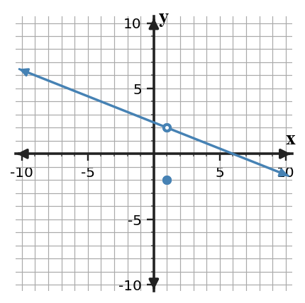

Continuity and Discontinuity
Mathematical idea: A function is continuous at a point only when the function value exists, the limit exists, and the two are equal.
You will test the conditions for continuity, adjust piecewise parameters, classify several types of discontinuity, and describe continuity on intervals.
Learning Target
Analyze continuity at a point and on intervals, and classify discontinuities using limits, function values, and piecewise definitions.
I can statements
- I can analyze continuity at a point and on intervals, and classify discontinuities using limits, function values, and piecewise definitions.
- I can determine parameter values that make a piecewise function continuous.
- I can justify a discontinuity classification from multiple representations.
Vocabulary
These are words and notation you will see in this section. Do not define them yet.
- continuity
- discontinuity
- piecewise function
- removable discontinuity
- jump discontinuity
Use the preview activity to decide which terms you already know, recognize, or do not know yet. Watch for these terms in bold when they are first meaningfully introduced or defined in the reading.
Preview: Skim Before You Read
Directions
Before reading closely, skim the vocabulary list and the section. Look at titles, headings, bold terms, equations, pictures, graphs, tables, diagrams, and other representations. Do not try to understand everything yet. Notice what already looks familiar and make predictions about what the section may explain.
Step 1 - Sort the vocabulary. Write each term in the column that best matches what you know right now. You may move a term later.
| Know for sure | Recognize | Don't know yet |
|---|---|---|
Step 2 - Skim the section. Record what catches your attention before you read closely.
| What I noticed | |
|---|---|
| What I predict | |
| What I wonder |
What's To Come
Directions
This is a long-range preview for future work. Do not solve it today. Read and annotate it. Mark what you already understand, what looks familiar, and what you think you will need to learn before you can complete the task.
Four points on different functions have the following local behavior.
| Case | Left-hand behavior | Right-hand behavior | Function value |
|---|---|---|---|
| A | approaches 3 | approaches 3 | 3 |
| B | approaches 2 | approaches 2 | 5 |
| C | approaches -1 | approaches 4 | 4 |
| D | decreases without bound | increases without bound | undefined |
- Which case is continuous?
- Which case appears removable?
- Which case appears to be a jump?
- Which case appears infinite?
- Which discontinuity can be repaired by changing only one function value?
Content: Read, Look, Annotate, Apply
Directions
Read in manageable chunks. Annotate the prose and the representations together: underline key relationships, circle or highlight new vocabulary, label important features, connect a sentence to an equation, table, graph, model, or diagram, and write brief questions or connections in the margins.
Reading 1: The Three Conditions for Continuity
A function is continuity-friendly at a point only when three facts line up: the function value exists, the two-sided limit exists, and the two are equal. More precisely, $f$ is continuous at $x=a$ when $f(a)$ is defined, $\lim_{x\to a}f(x)$ exists, and $\lim_{x\to a}f(x)=f(a)$.
These conditions combine ideas from the first three sections. The function value is point information, the limit is nearby information, and one-sided behavior determines whether the two-sided limit exists.
A discontinuity occurs when at least one condition fails. The failure matters because different patterns lead to different types of discontinuity and different ways, if any, to repair them.
Checking only $f(a)$ is therefore incomplete. A filled point may exist while the surrounding branches approach different values. Likewise, a clean common limit may exist while the point itself is missing or assigned somewhere else.
Continuity is local: a function can be continuous at one point and discontinuous at another. It is also used on intervals, where every point in the interval must satisfy the appropriate continuity requirements.
The three-condition checklist is not merely a definition to memorize; it is a diagnostic procedure that organizes graphical, numerical, and symbolic evidence.
- $f(a)$ exists.
- $\lim_{x\to a}f(x)$ exists.
- $\lim_{x\to a}f(x)=f(a)$.
All three conditions are required.
Stop and Discuss
- Which continuity condition checks nearby behavior rather than point behavior?
- Why is checking only $f(a)$ insufficient?
Example 1: Three Conditions for Continuity
At each point, check all three conditions for continuity: the function value exists, the two-sided limit exists, and the two are equal.
- At $x=2$, $f(2)=5$, $\lim_{x\to2^-}f(x)=5$, and $\lim_{x\to2^+}f(x)=5$. Is $f$ continuous?
- At $x=4$, $g(4)=1$, while both one-sided limits equal 3. Is $g$ continuous? Identify the failed condition.
- At $x=-1$, $h(-1)$ exists, but the left-hand limit is 2 and the right-hand limit is 6. Is $h$ continuous? Identify the failed condition.
You Try It 1: Three Conditions for Continuity
Use the three continuity conditions to analyze each point.
- At $x=0$, $p(0)=-2$ and both one-sided limits equal -2.
- At $x=3$, $q(3)=7$ and both one-sided limits equal 4.
- At $x=5$, $r(5)$ exists, but the left-hand limit is 1 and the right-hand limit is -1.
Reading 2: Piecewise Boundaries
A piecewise function uses different rules on different parts of its domain. At a boundary where the rule changes, continuity depends on whether the formulas meet at the same output.
To make a piecewise function continuous at $x=a$, compute the value approached by the left piece and the value approached by the right piece. If a parameter such as $k$ appears, set the two boundary expressions equal and solve for the parameter.
The endpoint symbols $\lt$, $\le$, $\gt$, and $\ge$ tell you which rule supplies the actual function value, but the limit still depends on both sides. This is why a piecewise boundary is a natural place to check one-sided limits explicitly.
For linear or polynomial pieces, substitution into each rule is usually enough to determine the one-sided values because those formulas are continuous on their own domains. The main reasoning is matching the pieces, not re-deriving their limits from tables.
After solving for a parameter, verify the common boundary value. A parameter that makes the equations equal should cause the left-hand limit, right-hand limit, and defined function value to agree.
This process turns continuity into an equation-solving condition, connecting limit reasoning back to algebra.
At a boundary $x=a$, compute the value approached by each piece and set them equal. Then verify that the defined function value uses that same common value.
Example 2: Make a Piecewise Function Continuous
Choose parameter values that make each piecewise function continuous at its boundary.
- Find $k$ so $f(x)=\begin{cases}4x-2,&x\lt-2\k,&x\ge-2\end{cases}$ is continuous at $x=-2$.
- Find $m$ so $g(x)=\begin{cases}2x+m,&x\le1\\5x-4,&x\gt1\end{cases}$ is continuous at $x=1$.
- State the equation you set up in each part to match the two sides.
You Try It 2: Make a Piecewise Function Continuous
Determine the parameter that removes the break at each piecewise boundary.
- $p(x)=\begin{cases}3x+1,&x\le2\x+k,&x\gt2\end{cases}$ at $x=2$.
- $q(x)=\begin{cases}mx-2,&x\lt-1\\4x+3,&x\ge-1\end{cases}$ at $x=-1$.
- For one part, verify the common boundary value after finding the parameter.
Reading 3: Classifying Discontinuities
A removable discontinuity occurs when both sides approach the same finite value but the function value is missing or different. Graphically, it looks like a hole that could be filled by placing one point at the limiting value.
A jump discontinuity occurs when both one-sided limits are finite but different. Changing one function value cannot repair a jump because the disagreement belongs to whole branches of nearby behavior.

Graph read: Identify the common nearby y-value at $x=1$ and compare it with the plotted function value.
An infinite discontinuity occurs when function values grow without bound in magnitude as the input approaches the point from at least one side. This behavior is associated with a vertical asymptote and is fundamentally different from a finite hole or jump.
The fastest classification method is to ask what the one-sided limits do. Same finite value suggests removable if continuity fails at the point; different finite values indicate a jump; unbounded behavior indicates an infinite discontinuity.
Graph shape is useful evidence, but the classification can also be justified from a table or from symbolic one-sided limits. Strong explanations name the evidence rather than relying only on visual appearance.
Once a discontinuity is classified, ask whether a local repair is possible. Only the removable case can be fixed by changing a single output value.
Interval notation then records where continuity remains. A point with a jump or infinite discontinuity splits an interval, while a repaired removable point can be included again.
Removable
Same finite one-sided limit, but the point value is missing or wrong.
Jump
Finite one-sided limits exist but are different.
Infinite
Outputs grow without bound near the point.
Continuous
Common finite limit equals the function value.
Stop and Discuss
- What one-sided-limit pattern identifies a jump discontinuity?
- Why can a removable discontinuity be fixed by changing one value but a jump cannot?
Example 3: Classify Discontinuities
Classify each discontinuity and justify the classification from the evidence.

- Case A: classify the discontinuity at $x=-1$ in the graph and state how to make the function continuous there.
- Case B: at $x=2$, the left-hand limit is -1 and the right-hand limit is 4. Classify the discontinuity.
- Case C: as $x\to3^-$, $f(x)\to-\infty$, and as $x\to3^+$, $f(x)\to\infty$. Classify the discontinuity.
You Try It 3: Classify Discontinuities
Classify the discontinuity in each case.
- Both one-sided limits at $x=1$ equal 6, but $f(1)$ is undefined.
- The left-hand limit at $x=-2$ is 3 and the right-hand limit is -4.
- $g(x)$ grows without bound in magnitude as $x$ approaches 5 from either side.
- For one case, state the evidence that distinguishes it from the other two.
A removable discontinuity can be repaired by redefining one output. A jump or infinite discontinuity cannot be repaired by changing only the value at the target because the surrounding behavior itself fails the two-sided condition.
Example 4: Repair and Interval Reasoning
A function is continuous on $(-5,2)$ and $(2,7)$, has a jump at $x=2$, and has a removable hole at $x=-1$ that is filled by redefining $f(-1)$ to equal its limit.
- After the hole is repaired, write the intervals of continuity.
- A student says, "Any function with a hole has no limit at the hole." Critique the statement.
- Explain why repairing a removable discontinuity is different from trying to repair a jump by changing only one function value.
You Try It 4: Repair and Interval Reasoning
A function has a removable discontinuity at $x=0$ and a jump at $x=4$.
- If the two-sided limit at $x=0$ is -3, what value should be assigned to $f(0)$ to repair the hole?
- If the one-sided limits at $x=4$ are 2 and 7, can redefining $f(4)$ make the function continuous there? Explain.
- Write a sentence comparing what the limit evidence looks like at the two discontinuities.
Vocabulary: Define the Terms
You have now seen these terms in the reading, representations, and practice. Use this table to consolidate what each term means in this course.
| Term / notation | Definition / meaning |
|---|---|
| continuity | the condition that a function value exists, the two-sided limit exists, and the limit equals the function value |
| discontinuity | a point where one or more continuity conditions fail |
| piecewise function | a function defined by different formulas or rules on different parts of its domain |
| removable discontinuity | a discontinuity with a finite two-sided limit that can be repaired by redefining a single function value |
| jump discontinuity | a discontinuity where the finite one-sided limits both exist but have different values |
Summary
- Continuity at a point requires a function value, a two-sided limit, and equality between them.
- At a piecewise boundary, compare the formulas from both sides before solving for a parameter.
- Removable, jump, and infinite discontinuities have different one-sided-limit signatures.
- A removable discontinuity can be repaired by changing one value; a jump cannot.
- Intervals of continuity exclude points where the required local behavior fails.
Common Mistakes
| Mistake | Why it is tempting | Check instead |
|---|---|---|
| Checking only whether a function value exists rather than all continuity conditions. | Point values are familiar from earlier algebra. | Check the limit conditions separately from the assigned value. |
| Confusing a removable discontinuity with a jump or infinite discontinuity. | A familiar theorem name can trigger automatic use. | List the required hypotheses and verify each one. |
| Forgetting to compare one-sided behavior at a piecewise boundary. | One direction may look convincing by itself. | Compare both directions explicitly. |
| Calling every hole a jump. | Both appear as breaks in a graph. | Check whether the two one-sided limits are the same finite value. |
| Trying to fix a jump with one point. | Removable discontinuities can be repaired this way. | A jump has different nearby limits, so one point cannot make the sides agree. |